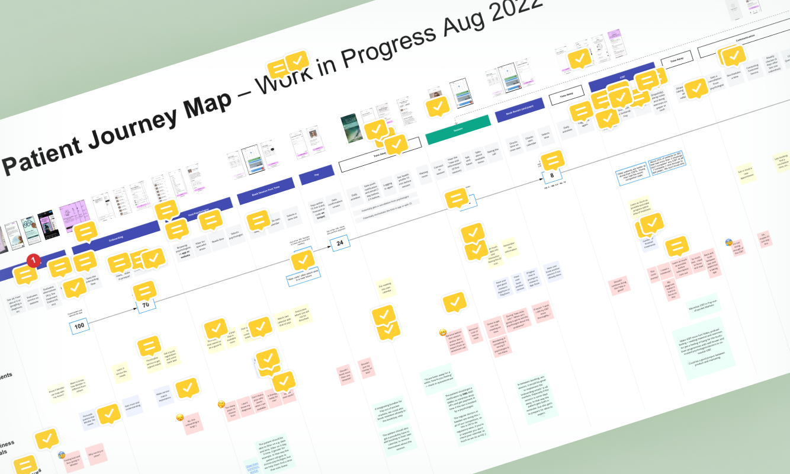
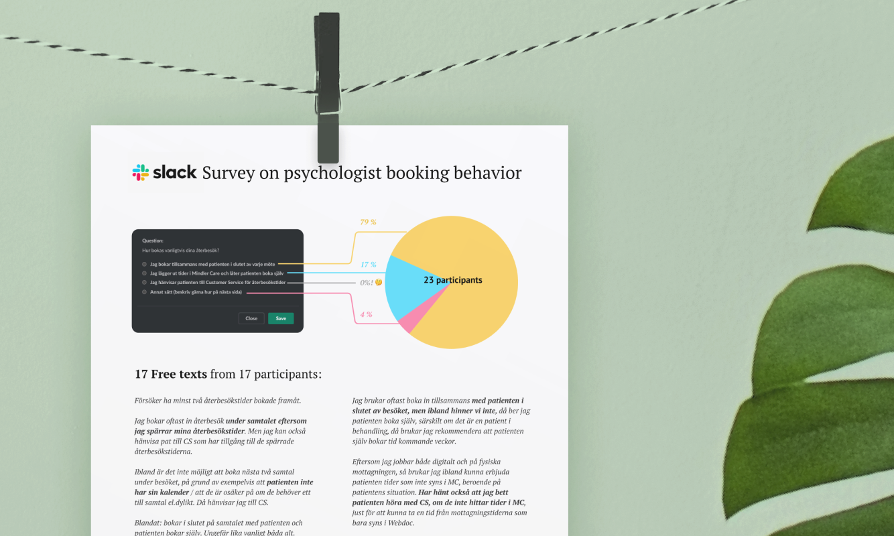
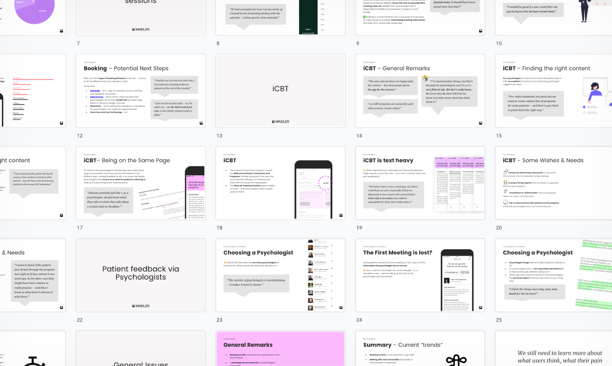
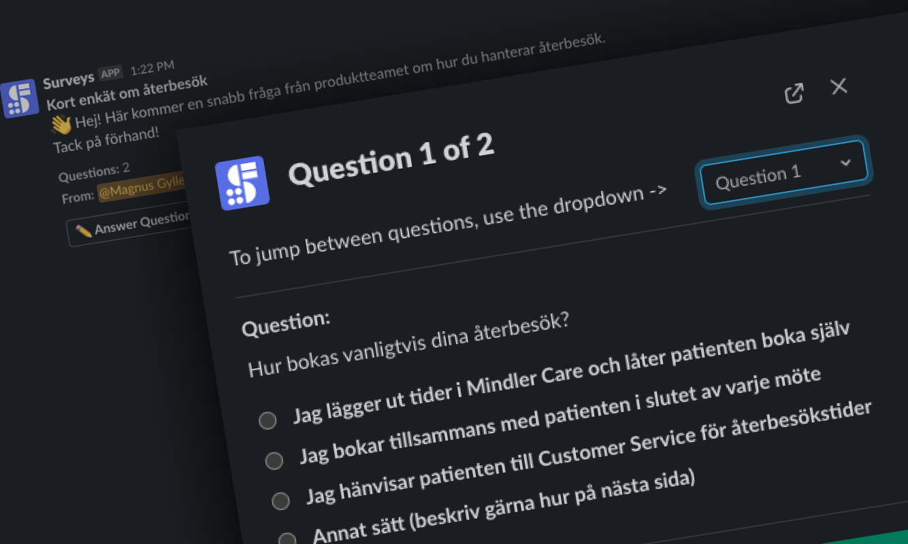
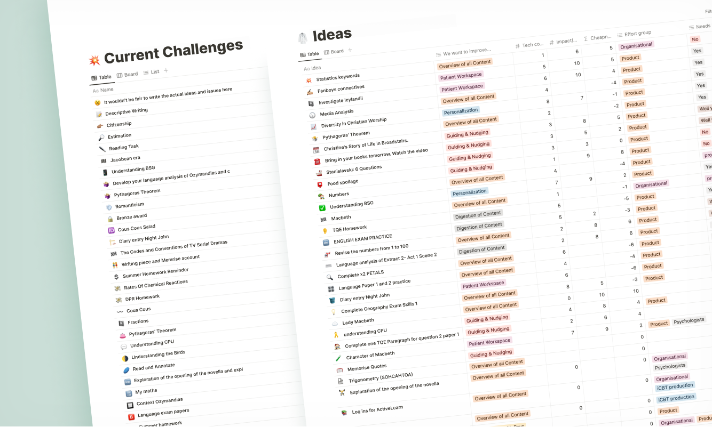

Mindler
Mental Healthcare App
Background
Mindler was founded in 2018 with the vision that everyone should have the chance to see a psychologist. By using their mobile app, users can find and get in contact with a Cognitive Behavioral Therapist (CBT) that matches their needs. Often on the same day.
Challenges
As I joined in the spring of 2022 as UX Lead, a number of challenges immediately became clear. From a UX perspective, Mindler was in great need of a clearer understanding of the customer journey, as well as routines for continuous user research. Contact between patients and product team had not yet been established, and the existing design team was primarily used as a resource set to implement according to specifications, rather than investigating actual reasons for doing things.
This resulted in difficulties in prioritization and a lack of long-term design plans. While the design team consisted of a group of highly talented individuals, it became clear there was a need for spending more time learning about the bigger picture. Without a holistic view of the design efforts and strategies it would be hard to make the product truly great and competitive.
Interviews and mappings
I began by interviewing stakeholders, customer service representatives and psychologists to understand how the dots were connected. Not only to find out about what challenges the different user groups were facing on a daily basis, but also to learn about how ideas and decisions were moving through the company, where they came from and who was driving what.
 Having as many stakeholders as possible invested in the making of the customer journey map helped getting a unified view and language.
I also saw the opportunity – and need – for evangelizing design in the company by sharing UX findings on the walls in the office and giving presentations about our work. Not only about findings and progress but also inspiring holistic ideas for improving the service.
By inviting as many stakeholders as possible to participate in the making of customer journey maps, company process diagrams and workshops we soon learned that this was a sought after process: making design more than just an on-call service – giving the design team a bit more mandate to sketch out potential future scenarios.
 Evangelizing the design work in the office. Making sure UX findings were not buried and forgotten in the cloud.
Design Sessions
In parallel I established a routine for having reocurring design sessions, with the purpose of syncing the vision of the team and to examine the product from a birds-eye view. Each session would deal with a certain topic and its connection to the rest of the service. We tackled such areas as potential improvements of the start screen, the patient CBT Study Material and the marketing site, and we mapped out the different states of the user journey.
 Design sessions were introduced to get the design team in sync.
Design sessions were introduced to get the design team in sync.
By trying to to have as many sessions in a physical meeting room – with whiteboards, brainstorms, crazy-eights and postits – I wanted to create a culture where designers were comfortable with each other. One where everyone felt safe speaking their minds.
Understanding the Psychologist situation
Through interviews and data analysis, and by mapping out a normal day for a Mindler psychologist, it became clear that there was a need for a number of improvements to help with their pressed schedule – that quite often only allowed for 5 minutes between each meeting. Stressful situations such as writing each patients journal before the end of the day, and “resetting” between each patient were some of the areas to address. By continously presenting and documenting the results from the interviews I made sure the findings were not exclusively for the design team.
 Presenting and visualising the psychologists’ situation.
To keep the flow of qualitative data continuous, I set up a routine for a “Question of the Week”. Submitted to the psychologists via online questionnaires it was designed to be as short and to the point as possible. I wanted the process to be cheap, direct and accessible so different tools such as Slack and Google Forms were tested. Psychologists should feel comfortable just diving in, taking a look and answering just one simple question. These could be topics such as “what do users need to know as they are onboarded”. I also submitted polls and prototypes to try out.
 Quick-and-dirty surveys, as short as possible to foster a sense of routine and convenience for the psychologists. “It’s just one question per week, I’ll have time for that”
Improving the booking system
The booking system used by the psychologists faced a number of challenges, especially when it came to providing time slots for revisits. To investigate this I launched a series of interviews with psychologists to better understand the work-arounds used to handle the balance between new patients and revisits. In conjunction with the data analysis team we were able to map out different “booking type behaviors” and start catering for their needs.
 Two different types of users eyeing the same time slot. Designing a booking system that creates a balance between inflow and retention.
Two different types of users eyeing the same time slot. Designing a booking system that creates a balance between inflow and retention.
Understanding the Patient situation
Finding a way to hear the voice of the patient was an important part of the task for me as a UX Designer, but nonetheless a very difficult one – for obvious reasons. Patient security, dignity and a respectful interaction with end users needs to be at the core of a serious mental healthcare provider.
Mimicing the process for creating minimal viable products (MVPs) in development I wanted to find short term goals as well as long term goals for learning more about the patient situation. In a short term perspective I started investigating and setting up third-party survey tools together with the app team. We wanted to gather small nuggets of information about how users felt about selected parts of the service.
A number of survey tools were investigated and evaluated and we settled for one that allowed to be fully integrated with the graphic style of the app and the web tool for psychologists.
In a long-term perspective I started investigating the possibilities of gathering feedback from patients via the psychologists and even in joint sessions with the trio patient, psychologist, designer.
Many initiatives were launched to reach out to patients, but in order to do so we obviously needed their consent for data collection, and by designing a well-crafted data collection consent flow we got a 94% consent rate.
 After designing the data collection consent with a clear message and an efficient screen-flow we got a 94% consent rate.
After designing the data collection consent with a clear message and an efficient screen-flow we got a 94% consent rate.
New life to the Start Page
Analysis showed the usage of the app was primarily circling around the video call. While this direct contact with a psychologist was truly at the core of the service, there was a strong need to communicate the importance of getting involved with reading the CBT Study Material provided between the sessions.
Since the start page – where all patients land when entering the app – was a fairly static and uninformative place, I initiated a project for turning it into a personal hub for each user to keep up with their progress.
Since design sessions and general brainstorm sessions generated a large amount of ideas for improving the Start Page, we vetted and plotted them in an Impact-Effort Matrix, making sure we prioritized the most important ideas before breaking them up into MVP steps, making it easier to isolate variables for success metrics.
Promoting the CBT Study Material
To further promote the importance of the CBT Study Material I joined a cross-disciplinary team within Mindler to see the topic from a broader perspective. Following a rigorous analysis of collected data, a number of challenges surfaced. Some were previously known - now further verified - while some uncovered new issues and potential opportunities.
 Brainwriting combined with sketching brought out a large number of ideas from psychologists, stakeholders, designers and content writers.
Brainwriting combined with sketching brought out a large number of ideas from psychologists, stakeholders, designers and content writers.
Feasibility, desirability, and viability scorecards were used to find out where to begin, and this is where things really started happening. Both management, product team and psychologists were onboard with the ideas, expressing their liking.
Now the real testing and iterative work could begin. These ideas cannot be disclosed here, but get in contact with me if you want to learn more about the process!
 Initally 61 ideas – each stemming from a challenge uncovered during interviews and data analysis – were mapped out in a Notion document.